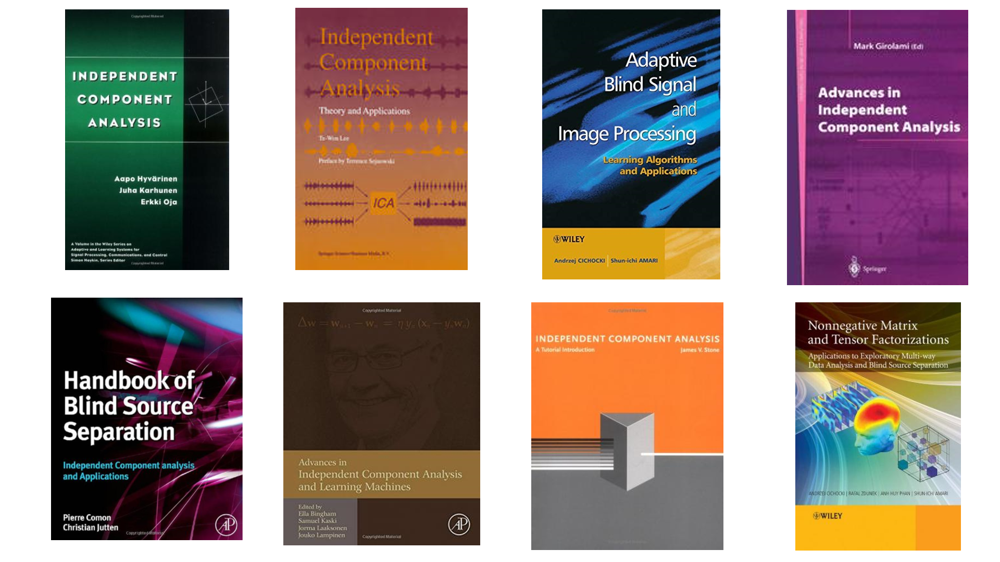
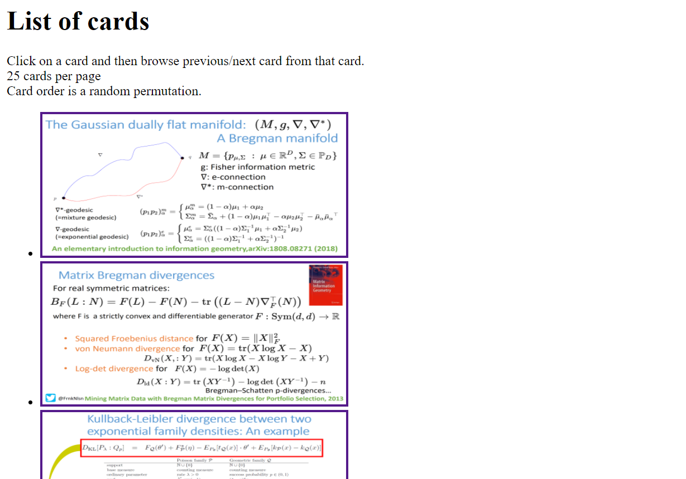
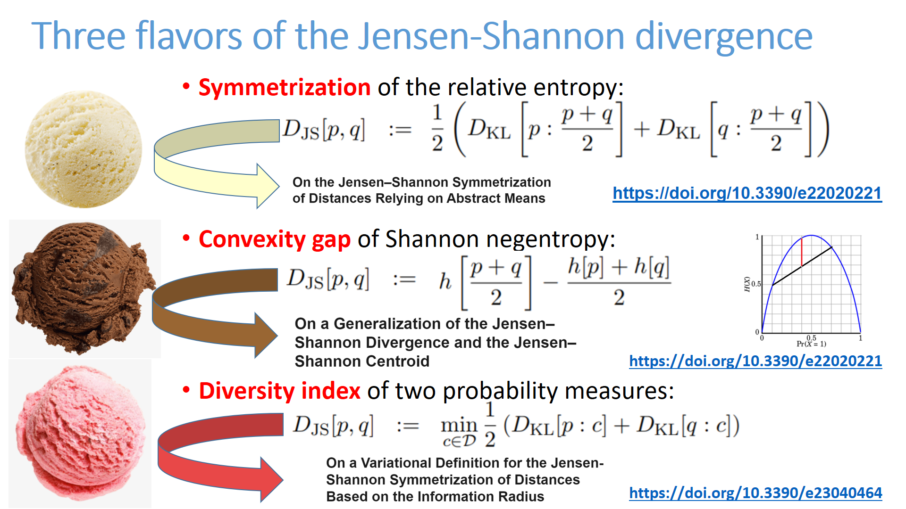
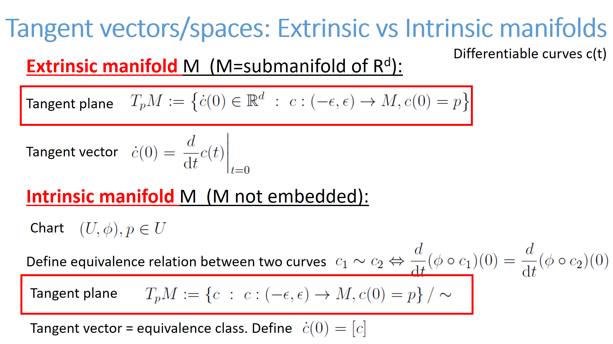

<h1>List of cards</h1>
Click on a card and then browse the previous card or the following card from the current card.<BR>There are at most 25 cards per page<BR>The card order is random (at HTML compile time).<ul><LI><center><A HREF="card-75.html" target="_blank"></A>(75)</LI>
<LI><center><A HREF="card-76.html" target="_blank"></A>(76)</LI>
<LI><center><A HREF="card-77.html" target="_blank"></A>(77)</LI>
<LI><center><A HREF="card-78.html" target="_blank"></A>(78)</LI>
<LI><center><A HREF="card-79.html" target="_blank"></A>(79)</LI>
<LI><center><A HREF="card-80.html" target="_blank"></A>(80)</LI>
<LI><center><A HREF="card-81.html" target="_blank"></A>(81)</LI>
<LI><center><A HREF="card-82.html" target="_blank"></A>(82)</LI>
<LI><center><A HREF="card-83.html" target="_blank"></A>(83)</LI>
<LI><center><A HREF="card-84.html" target="_blank"></A>(84)</LI>
<LI><center><A HREF="card-85.html" target="_blank"></A>(85)</LI>
<LI><center><A HREF="card-86.html" target="_blank"></A>(86)</LI>
<LI><center><A HREF="card-87.html" target="_blank"></A>(87)</LI>
<LI><center><A HREF="card-88.html" target="_blank"></A>(88)</LI>
<LI><center><A HREF="card-89.html" target="_blank"></A>(89)</LI>
<LI><center><A HREF="card-90.html" target="_blank"></A>(90)</LI>
<LI><center><A HREF="card-91.html" target="_blank"></A>(91)</LI>
<LI><center><A HREF="card-92.html" target="_blank"></A>(92)</LI>
<LI><center><A HREF="card-93.html" target="_blank"></A>(93)</LI>
<LI><center><A HREF="card-94.html" target="_blank"></A>(94)</LI>
<LI><center><A HREF="card-95.html" target="_blank"></A>(95)</LI>
<LI><center><A HREF="card-96.html" target="_blank"></A>(96)</LI>
<LI><center><A HREF="card-97.html" target="_blank"></A>(97)</LI>
<LI><center><A HREF="card-98.html" target="_blank"></A>(98)</LI>
<LI><center><A HREF="card-99.html" target="_blank"></A>(99)</LI>
</ul><BR> <A HREF="index2.html">Previous card page</A>&nbsp;&nbsp;&nbsp; <A HREF="index4.html">Next card page</A>
